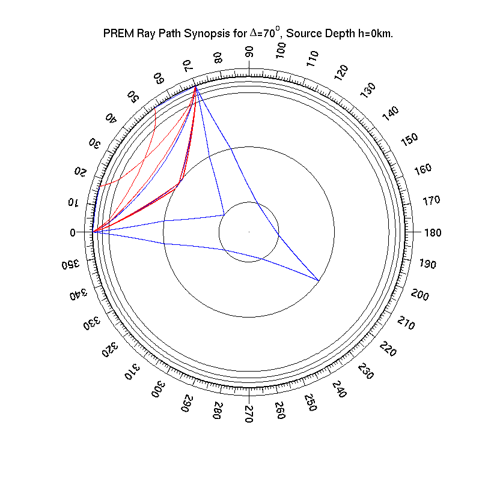

A phase summary is a list of all phases that arrive at a given distance. Such a summary is very useful in seismogram interpretation. To generate one, do the following:
NOTE that multiple occurences of phases are considered.
When called without output parameter, the travel time synopsis (epicentral distance, travel time and ray parameter) is written to the screen:
>>mksynopsis(70,0,prem,'silent'); Phase arrivals for model PREM Delta=70deg, z=0km P 70.00 00:11:12.05 6.1279 PcP 70.00 00:11:34.003 4.2154 PKiKP 70.00 00:17:24.0325 1.4057 S 70.00 00:20:24.8811 11.6931 SP 70.00 00:20:46.5762 13.6198 PS 70.00 00:20:46.5854 13.6198 SKS 70.00 00:21:14.8099 7.4509 SKKS 70.00 00:21:14.9599 7.5158 ScS 70.00 00:21:16.4792 7.8741 PKKP 70.00 00:30:57.3309 -1.4679
(The above example was computed with a 10km-"flat" discretization of the continuously defined PREM model)
If you call MKSYNOPSIS without output argument, the rays of all phases are also plotted.
|  |
| Example for a ray path synopsis created by MKSYNOPSIS for a surface focus in PREM, at an epicentral distance of 70° (as vector graphics in PDF) |
Without the 'silent' parameter, MKSYNOPSIS produces a lot of screen output. When called with output parameter, the output looks like this:
>> syn=mksynopsis(70,0,prem); MKSYNOPSIS: evaluating PREM for P MKSYNOPSIS: evaluating PREM for PKP MKSYNOPSIS: evaluating PREM for PKIKP MKSYNOPSIS: evaluating PREM for PcP MKSYNOPSIS: evaluating PREM for PKiKP MKSYNOPSIS: evaluating PREM for PKKP MKSYNOPSIS: evaluating PREM for SP MKSYNOPSIS: evaluating PREM for PS MKSYNOPSIS: evaluating PREM for ScP MKSYNOPSIS: evaluating PREM for PcS MKSYNOPSIS: evaluating PREM for S MKSYNOPSIS: evaluating PREM for SKS MKSYNOPSIS: evaluating PREM for SKIKS MKSYNOPSIS: evaluating PREM for ScS MKSYNOPSIS: evaluating PREM for SKKS